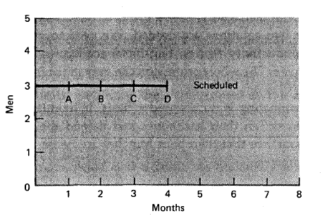
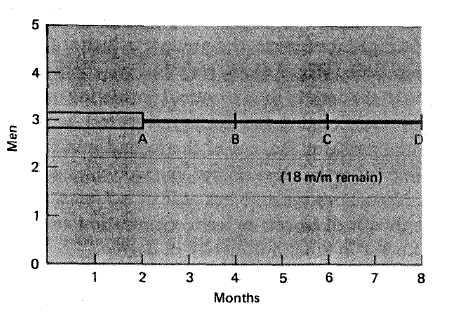
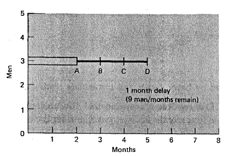
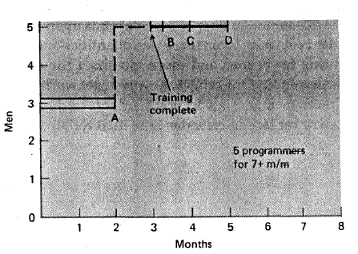
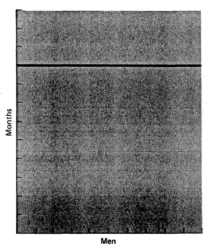
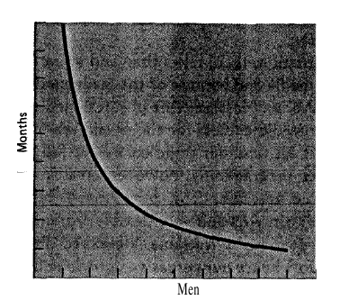
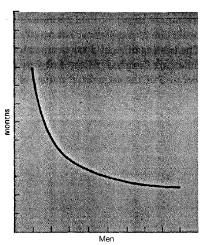
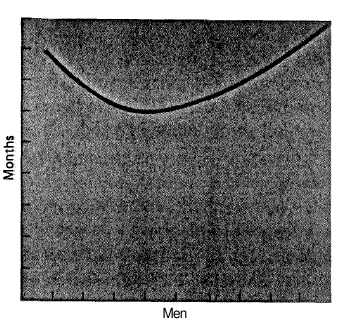

Acest laborator isi propune sa familiarizeze studentii cu importanta intalnirilor cu echipa si cu toti cei implicati in proiect. Pe langa niste abordari des intalnite in dezvoltarea proiectelor la intampinarea de dificultati, se va pune accentul si pe modalitati de evaluare atat pentru echipe cat si pentru toate persoanele implicate in proiect.
* Formular de evaluare a echipei * Formular de evaluare a efortului echipei * Formular de evaluare proprie și a echipei
Reguli de bază
* Nail Down the Essentials * Keep It Simple * Fine-tune to Your Audience * Know Your Media * Set Expectations
Componente principale ale unui raport
* report date * project status * project summary * key issues * tasks and next steps * decisions required * key future dates * budgeted amount * spend to date
Este foarte importantă comunicarea. Aspecte care determină eșecul:
* Poor communication channels * Lack of honest communication * Unwillingness to communicate bad news
Ce trebuie raportat?
* sarcini încheiate de la ultimul document de raportare * sarcini în lucru cu data încheierii prevăzută * sarcini viitoare cu data așteptată prevăzută * cheltuieli înregistrate * aspecte care necesită atenție * recomandări pentru îmbunătățirea proiectului sau schimbări * întrebări sau aspecte care necesită aprobarea sau input-ul altor persoane
Exemplu de formular de raportare a progresului.
* folosirea planului proiectului ca ghid principal de coordonare a proiectului * monitorizarea și actualizarea consecventă a planului * calitatea comunicării este un factor important în controlul proiectului * monitorizarea proiectului prin comparatie cu plan într-un mod regulat * fii implicat * adaptarea la planul proiectului, buget sau împărțirea sarcinilor pentru a mentine proiectul activ * documentarea progresului proiectului și schimbări și comunicații membrilor echipei
* starea activitățile efectuate sau în curs de efectuare comparativ cu planul proiectului * cantitatea de muncă în curs de încheiere * calitatea muncii care să fie încheiată * costurile înregistrate raportate cu planul * atitudinea celor implicați în proiect față de alți membri ai echipei și față de clienți * coeziunea și comunicarea în cadrul echipei
* comunicarea stării proiectelor și a modificărilor înregistrate către ceilalți membri ai echipei * informarea personalului de management și a clienților legată de starea proiectului (raportare) * furnizarea de justificări pentru ajustarea proiectului * documentarea planului curent raportată la planul inițial
Evaluarea continuă a proiectului este necesară pentru a verifica dacă proiectul și sarcinile asociate respectă deadline-urile dorite. În cazul în care deadline-urile nu sunt respectate din cauza circumstanțelor nefavorabile proiectul trebuie reevaluat și replanificat proces care poate dura destul de mult.
Evaluarea proiectului și avansului echipei în ansamblu se realizează comparând planul inițial cu ceea ce s-a realizat. O formulă cunoscută pentru a determina eficiența planificări este SPI (Schedule Performance Index).
SPI reprezintă eficiența planificării calculată ca raport între valoarea obținută (earned value - EV) și valoarea planificată (planned value - PV). Formula este SPI = EV / PV x 100. EV răspunde la întrebarea “Cât de mult s-a realizat până în acest punct?”. PV răspunde la întrebarea “Cât de mult s-a planificat pentru a se realiza până în acest punct?”.
Un rezultat egal cu 100 indică faptul că proiectul evoluează conform estimărilor. Un rezultat mai mare decât 100 indică faptul că proiectul evaluează mai bine decât inițial planificat/estimat. Un rezultat mai mic decât 100 înseamnă ca proiectul este în urmă.
Evaluarea echipei este importantă pentru a asigura îndeplinirea sarcinilor în limita termenului impus în planul proiectului. În momentul în care un membru al echipei nu a îndeplinit sarcinile individuale pot apărea întârzieri importante în alte faze ale proiectului.
În general se poate stabili un interval de încheiere a unei sarcini raportat cu implicarea zilnică a unei persoane (spre exemplu 8 ore pe săptămână). Dacă, se planifică o sarcină pentru 24 de ore de lucru, atunci acea sarcină trebuie încheiată în interval de 3 zile. În funcție de durata pentru încheierea sarcini, aceasta poate fi conform planului, în urmă sau înainte.
Întrebări în cadrul echipei:
* începi cu autoevaluarea acelei persoane * evită exprimări de genul “de ce nu poți face lucrurile la fel ca …” * accentuează comportamentul și acțiunile, nu persoana * fii consecvent în exprimare * reviziile trebuie să urmărească îmbunătățirea performanței
Exemplu de evaluare a PM de către client.
Exista si jocuri care pot fi folosite in evaluarea echipei, la fel si mai multe tipuri de formulare: Jocul “Mirror Mirror” Link poate fi folosit penttru a determina feedback-ul peentru manageri team-leaderi.
Acesta este un formular simplu, rapid de completat, dar care nu da foarte multe informatii. Este predispus la supraaprecieri.
Acesta este un formular foarte bun pentru evaluare personala si de echipa dar este predispus la supraaprecieri (toata lumea poate spune lucruri bune)
Acesta, desi mai simplu, obliga pe cei care il completeaza sa faca o ierarhizare in echipa.
Abordarea cea mai buna a unui proiect este, dupa cum s-a mai discutat si pana acum la laborator, creearea unui WBS(work Breakdown Structure) si impartirea sarcinilor individuale, fiecare team leader facand cate o estimare a timpului necesar si a persoanelor implicate in realizarea lor.
La sfarsitul a doua intalniri cu toata echipa, ar trebui ca project managerul sa poata sa constituie o tabela cum este cea definita de abordarea Wideband Delphi.
De asemenea se va putea face si un itinerariu al proiectului care va fi urmat. Mai multe puteti citi la acest link. Este bine ca la sfarsitul intalnirilor sa se poata constitui un plan al proiectului care sa contina atat riscurile cat si niste metode sumare de a le evita.
Exista cazul in care se trece peste termenul limita asociat fiecarui task. In acest caz se poate alege una din urmatoarele abordari:
* a fost o intamplare si se va munci mai bine la celelalte taskuri, deci proiectul nu va fi afectat si nu se face nimic in acest sens * nu se poate face nimic, asa ca terminarea proiectului se amana (in caz ca este posibil) cu timpul necesar terminarii task-urilor * se asigneaza inca niste persoane care sa ajute la terminarea taskurilor in timp util
Fiecare dintre cele trei metode are avantaje si dezavantaje. Daca la 'prima metoda', nu se reuseste sa se reintre in program, toate echipele o sa aiba de suferit. 'A doua optiune' nu este tot timpul disponibila, deoarece nu se poate intaarzia oricat cu terminarea proiectului, acesta putand sa ajunga irelevant. De exemplu daca firma X lucreaza in paralel cu firma Y la un produs, chiar daca firma X face produsul bine, daca nu il termina inainte de firma Y s-ar putea sa nu mai aiba clienti. 'Ultima varianta' o sa o dezbatem mai pe larg in ceea ce urmeaza.
S-a descoperit experimental, ca desi numarul de persoane influenteaza pozitiv desfasurarea proiectului(mai multe persoane pot sa faca mai multe lucruri intr-un interval mai scurt) nu este neaparat necesar ca timpul total acordat proiectului sa scada. Daca persoanele in cauza nu sunt de la inceputul activitatii implicati in proiect, se va pierde timp cu aducerea la cunostinta a tuturor actiunilor intreprinse pana acum. In plus, daca numarul de persoane depaseste numarul de task-uri individuale, mai multe persoane o sa se ocupe de aceeasi bucatica de proiect si s-ar putea ca comunicarea sa incetineasca prea mult avansul.
Sa luam o sarcina, de exemplu legarea calculatoarelor la internet in aceasta sala. Cam cat timp ne ia? 15 minute? O ora? Hm…
In aceasta mica sarcina nu uitati ca sunt incluse:
* cumpararea de cabluri, eventual mufarea lor * instalarea de switch-uri * cablarea propriu-zisa * verificarea fiecarui calculator * eventual refacerea cablurilor
Este bine ca atunci cand estimam timpul necesar pentru o sarcina sa incercam sa acoperim cat mai in detalui sarcina respectiva. S-ar putea sa ne trezim ca desi suntem persoane foarte capabile, timpul sa nu fie bine estimat din cauza ca nu s-au evaluat bine activitatile necesare sarcinii in cauza. O regula destul de raspandita in calculul timpului unui proiect, este calculul om/luna. Se estimeaza cat i-ar lua in luni unui singur om sa efectueze proiectul, se scoate radicalul acestui numar sa ii spunem x. Acest numar, x devine acum marimea aproximativa a echipei precum si timpul necesar pentru echipa sa termine proiectul.
“There are no good project managers - only lucky ones.
The more you plan the luckier you get.”
Principalele motive pentru estimari gresite sunt urmatoarele:
* Optimism nefondat - nimic nu va merge gresit * Subestimarea urmatoarelor probleme: control invatare supervizare intalnirile de proiect timpul de pregatire timpul pierdut cu comunicarea * Neintelegerea scopului propus * Ignorarea realitatii - parerea ca nimic nu o sa se schimbe in cursul proiectului * Estimarea timpului dupa o parere nefondata * Estimarea necoordonata intre activitati
Cea mai buna metoda de a preveni orice fel de incurcatura cu timpul de livrare sunt evaluarile continue ale proiectului. Saptamanal trebuie sa se intalneasca fiecare echipa, sa stabileasca cat de departe au ajuns si cat de mult mai au de facut. Sa reevalueze timpul necesar si sa ceara ajutor (mai mult timp sau mai multe resurse) in caz de nevoie. De asemenea cel putin lunar ar trebui sa se intalneasca toata echipa pentru o estimare a intregului proiect. Intalnirile nu trebuie sa reflecte numai parerile personale ale celor implicati ci si timpul efectiv petrecut la respectivele sarcini, pentru o evaluare mai concreta.
Cea mai obisnuita abordare in caz de panica este adaugarea de persoane la echipele care au ramas in urma. Acest lucru ar putea da roade, doar daca task-urile sunt independente si persoanele adaugate echipelor sunt competente si gata instiintate. Conform unui citat “It takes one woman nine months to have a baby. It cannot be done in one month by impregnating nine women.”, nu orice sarcina poate fi paralelizata eficient.
O sa prezentam in continuare niste rezultate experimentale legate de numarul de persoane si evolutia proiectelor.
Sa presupunem ca avem un proiect la care estimarea timpului este urmatoarea: 
Daca se descopera ca pentru terminarea taskului A s-a depasit termenul initial exista posibilitatea: * se va depasi termenul pentru toate taskurile de acum in colo, deoarece evaluarea a fost facuta gresit si evaluarea corecta ar fi in felul urmator: 
* termenul a fost depasit numai pentru etapa A si celelalte etape se vor desfasura cum era planificat: 
Tipuri de intarzieri raportate catre Project Manager:
* intarzieri care pot fi trecute cu vederea - intarzieri care nu vor afecta bunul mers al proiectului; sunt intarzieri de scurta perioada a cate unei etape, dar cu o mobilizare a echipei se poate sa nu se treaca de deadline * intarzieri la care ar trebui ca project managerul sa intervina Este responsabilitatea Project Managerului sa distinga intre aceste doua variante si sa reactioneze corespunzator.
Daca Project Managerul considera ca este cazul sa se mai adauge persoane la taskul care este in intarziere, sau per total la echipele proiectului. In acest caz trebuie sa fie luata in seama si perioada de training a persoanelor nou venite, atunci pentru exemplul precedent se potriveste schema: 
Legea lui Brook spune ca daca se adauga persoane la un proiect care este inintarziere, proiectul o sa fie si mai mult intarziat. Aceasta lege a fost comentata de autorii Abel-Hamid si Madnick in cartea “Software Project Dynamics: An Integrated Approach” si au demonstrat ca adaugarea de persoane nu implica neaparat ca proiectul o sa fie livrabil si mai tarziu decat planuit. Ei sustin ca adaugarea de persoane intr-un stadiu incipient, cand persoanele o sa aiba mai mult timp sa cunoasca proiectul si sa se acomodeze cu echipa ar putea fi benefic, pe cand adaugarea de persoane cand proiectul este deja in intarziere nu o sa aduca nici un beneficiu. O problema in adaugarea de persoane este redistribuirea de sarcini. Trebuie ca tot proiectul sa fie redistribuit pentru noua echipa. Acest proces ar putea sa fie foarte complicat si sa se piarda mult timp astfel.
Exista mai multe tipuri de proiect in functie de comportamentul legat de numarul de oameni dupa cum urmeaza:
Etape nepartitionabile: 
* indiferent de cate persoane lucreaza la acest fel de proiect, el se va termina tot in acelasi timp
Proiect perfect partitionabil: 
* cu cat se adauga mai multe persoane, cu atat proiectul este terminat mai repede
Proiect care necesita comunicare:

*se poate observa o imbunatatire odata ce se adauga persoane, dar comunicarea care este implicata de acest proiect face ca efectul sa fie mai scazut ca in cazul proiectelor perfect partitionabile
Proiect cu interconexiuni complexe 
* exista un minim in acest graf, odata ce se trece de el se poate observa ca interconexiunile complexe intre modulele proiectului ingreuneaza munca si timpul de terminare a proiectului creste daca se adauga mai multe persoane
“Too few people on a project can't solve the problems - too many create more problems than they solve.” Brook's Law*
* “Successful project management is all about spotting the projects that will succeed and shouting 'mine' and for the rest ducking and shouting 'yours'.”
* “If you don't attack the risks the risks will attack you.”
* “If there's a 50% chance of something going wrong then 9 times out of 10 it will.”
* “One in a million chances crop out 9 times out of 10.”
* Mai multe citate despre Project Management se pot gasi aici.
* Se dorește realizarea următorelor proiecte: nucleu de sistem de operare pentru un sistem embedded server web centrat pe performanță (performance-oriented) ** utilitar de project management * Fiecare proiect trebuie realizat în interval de 6 luni. * Estimați numărul de membri ai echipei care să realizeze respectivul proiect (oameni-lună; man-month) * Care sunt principalele elemente ale unui formular de evaluare în luna 1, 2, 4, și 6 (la sfârșit)? * Presupunând că din cauza unor estimări nereușite, PM-ul își dă seama în luna a 4-a că proiectul va dura 8 luni. Ce decizie ați lua în acel moment?
{kind=link}
{kind=link}
{kind=link}
{kind=link}
{kind=link}
{kind=link}
{kind=link}
{kind=link}